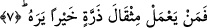
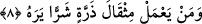

amellerin gösterilmesinden maksad amel defterleridir ki bu da gözle görülmeyi ifâde
eder. “Görme” ilerde geleceği üzere, yazılması anlamına alınırsa o zaman kalbî olabilir.
Âyet-i kerimede ki, “çıkacaklar” şeklinde ifâde ettiğimiz “sader” kelimesi, geldikten
sonra dönmek ve ayrılmak anlamınadır. Cumhura göre “vürud” onların yerde
defnedilmiş olmaları, “sader” ise, yeniden dirilmek için ayağa kalkmaları, demektir.
Bu anlamda olmak üzere, vedâ tavafına “tavafu’s-sader” denilir. Bu tavaf bilindiği
üzere, hacıların memleketlerine dönerken yaptıkları en son tavaftır. Bu da bize
kelimenin yapısında var olan “dönme” anlamını göstermektedir.
Âyetten anlaşıldığına göre o gün insanlar kabirlerinden darmadağınık çıkacaklardır.
Bazılarının yüzleri ve elbiseleri beyaz ve güven içinde olacaktır. Önlerinde bir seslenen
şöyle seslenecektir. “Bu Allah’ın dostudur.” Bazıları ise, kapkara yüzlü, çırılçıplak,
yalınayak, zincire vurulmuş korku içinde olacaklardır. Onun da önünde bir seslenen
çıkıp şöyle diyecektir. “Bu Allah’ın düşmanıdır.”
İbn Abbas’tan rivâyet olunuyor: Cebrâil (a.s.) bir gün Peygamber (s.a.) Efendimiz’e
gelerek: “Ey Muhammed! Rabbin sana selam söylüyor. Kendisi daha iyi bildiği halde,
Rabbin senin neden ğamlı, neden hüzünlü olduğunu soruyor?” dedi. Peygamber
Efendimiz (s.a.) şöyle cevap verdi: “Ey Cebrâil! Uzun zamandan beri ümmetimin
durumunu düşünmekteyim.” Cebrâil sordu: “Ehl-i küfür hakkında mı, yoksa ehl-i İslam
hakkında mı?” Efendimiz (s.a.) cevap verdi: “Hayır, bilakis Lâ ilahe illallah ehlini
düşünmekteyim.”
Cebrâil (a.s.) Peygamber Efendimiz (s.a.)’in elini tutup onu Benû Seleme
kabristanlığına götürdü. Sağ kanadı ile bir ölünün kabrine vurdu. Ona: “Allah’ın izni ile
kalk” dedi. Bunun üzerine kabirden bembayaz yüzlü, bir adam kalktı. “La ilahe illallah,
Muhammedün rasûlullah, el-Hamdü lillahi rabbi’l-alemîn” diyordu. Cebrâil o adama
“eski hâline geri dön” dedi ve adam eski hâline geri döndü.
Cebrâil daha sonra sol kanadı ile bir ölünün kabrine vurdu. Ve Allah’ın izni ile kalk”
dedi. Kabirden, kapkara yüzlü mavi gözlü bir adam çıktı. “Vay benim iç yangınıma! Vay
benim başıma gelenlere! Vay benim rezil, rüsvaylığıma!” diyordu. Cebrâil ona da “eski
hâline dön” dedi ve adam eski hâline kabrine döndü. Sonra Cebrâil Peygamber
Efendimiz (s.a.)’e dönerek: “Kıyamet günü işte böyle; nasıl ölmüşlerse öyle
dirilecekler.” dedi.
7. Kim zerre miktarı hayır yapmışsa onu görür.
8. Kim de zerre miktarı şer işlemişse onu görür.
Bu iki âyet yukarıda geçen, “kendilerine gösterilmek için” ifâdesini açıklamaktadır.